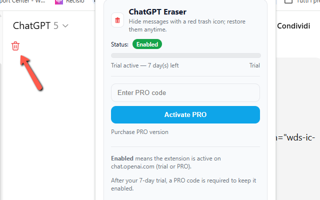

ChatGPT Eraser
Keep your ChatGPT conversations clean, focused, and truly yours. ChatGPT Eraser adds a subtle red trash icon to every message so you can hide anything you don’t need anymore—answers, drafts, side discussions, or noisy snippets. Deleted messages fade out smoothly along with their related action buttons, leaving a tidy, distraction-free thread. ✨
Unlike clunky copy/paste workflows or full-page cleaners, ChatGPT Eraser works inside each conversation. A smart Restore button appears in the bottom corner of the current chat and shows a live counter of hidden items. It’s per-chat by design, so cleaning one thread never affects the others. Whether you’re researching, coding, or writing, you’ll keep only what matters—and bring anything back with a single click. ♻️
The extension includes a free 7-day trial. After that, you can upgrade to the PRO version directly from the popup (license form + purchase link). No accounts, no tracking, and no complicated setup. It’s lightweight, privacy-friendly, and built to feel native in the ChatGPT UI. 🔒⚡
🚀 How it works
- Install the extension from https://chromewebstore.google.com/detail/chatgpt-eraser/odlcgcceaecpdaakpcefemielciockgf and open any ChatGPT conversation.
- Click the red trash icon on a message to hide it.
- The message and its action row (copy / good / bad / share) disappear with a smooth animation.
- Use the Restore button to bring back all hidden items for this chat only.
- Manage your license and trial from the popup (status, days left, PRO activation).
✅ Key features
- One-click hide for any message directly inside ChatGPT.
- Automatic removal of the related action bar (copy / rate / share).
- Per-chat restore & counter: clean one thread without touching the others.
- 7-day free trial; simple PRO unlock from the popup.
- Lightweight, privacy-friendly, no external accounts.
- Multilingual labels (auto-detect language) and smooth UI animations.
📷 Screenshots

Streamline your workspace, stay focused on the outcome, and tidy up clutter in seconds. Try ChatGPT Eraser today and enjoy cleaner, calmer conversations—exactly the way you want them. 🧹
View on Chrome Web Store